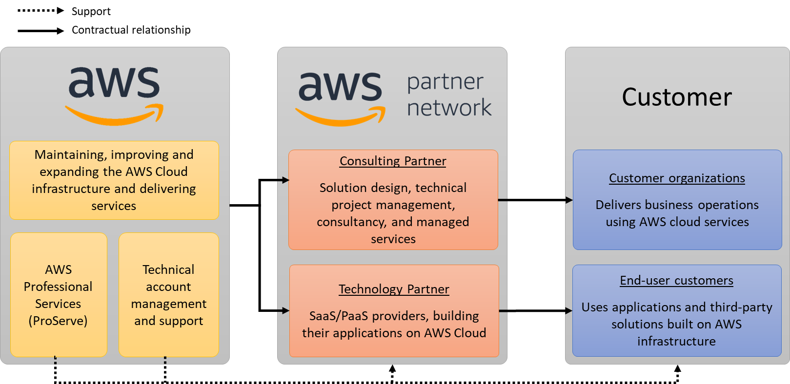

Beschreibung
AWS Auto Scaling ist ein Dienst, der automatisch die Kapazität Ihrer Anwendungen anpasst, um eine stabile Leistung bei minimalen Kosten sicherzustellen. Dieser Dienst ermöglicht eine einfache Skalierung für verschiedene Ressourcen und Dienste innerhalb Ihrer AWS-Infrastruktur.
Durch die Verwendung von AWS Auto Scaling können Sie innerhalb weniger Minuten die automatische Skalierung für die AWS-Ressourcen konfigurieren, die Teil Ihrer Anwendung sind. Sie haben die Flexibilität, die automatische Skalierung sowohl für einzelne Ressourcen als auch für ganze Anwendungen zu konfigurieren.
Ein zentraler Bestandteil von AWS Auto Scaling ist der Skalierungsplan. Dieser Plan ermöglicht es Ihnen, die Skalierung Ihrer Ressourcen zu konfigurieren und zu verwalten. Der Skalierungsplan nutzt dynamische Skalierung sowie prädiktive Skalierungstechniken, um die Ressourcen Ihrer Anwendung automatisch zu skalieren.
Durch die dynamische Skalierung passt AWS Auto Scaling die Ressourcen Ihrer Anwendung basierend auf der aktuellen Auslastung an. Dies bedeutet, dass zusätzliche Rechenleistung hinzugefügt wird, um die steigende Nachfrage Ihrer Anwendung zu bewältigen, und Ressourcen entfernt werden, wenn die Nachfrage abnimmt.
Darüber hinaus bietet die prädiktive Skalierung eine intelligente Vorhersage der Ressourcennutzung auf Basis von historischen Daten und Trends. Dies ermöglicht es AWS Auto Scaling, die Ressourcen Ihrer Anwendung rechtzeitig anzupassen, um zukünftige Lastspitzen oder -abfälle proaktiv zu bewältigen.
AWS Auto Scaling ermöglicht eine effiziente und automatisierte Verwaltung der Ressourcenskalierung, um die Leistung Ihrer Anwendung zu optimieren und gleichzeitig die Kosten zu minimieren.
-AWS Auto Scaling ist ein Dienst zur automatischen Anpassung der Kapazität von Anwendungen, um stabile Leistung bei minimalen Kosten sicherzustellen.
-Ermöglicht einfache Skalierung für verschiedene Ressourcen und Dienste innerhalb der AWS-Infrastruktur.
-Konfiguration der automatischen Skalierung für AWS-Ressourcen innerhalb weniger Minuten möglich.
-Flexibilität, automatische Skalierung für einzelne Ressourcen oder ganze Anwendungen zu konfigurieren.
-Zentraler Bestandteil: Der Skalierungsplan verwaltet und konfiguriert die Skalierung von Ressourcen.
-Nutzt dynamische Skalierung basierend auf aktueller Auslastung und entfernt oder fügt Ressourcen je nach Bedarf hinzu.
-Prädiktive Skalierung basiert auf historischen Daten und Trends, um zukünftige Lastspitzen oder -abfälle proaktiv zu bewältigen.
-Ziel: Effiziente und automatisierte Verwaltung der Ressourcenskalierung.
Schlüsselwörter
Schlüsselworte bzw. Schlagworte sollen uns dabei helfen, einen Service leichter zu erkennen, wenn es um Prüfungsfragen geht. Ließ dir die Fragen richtig durch und achte auf folgende Schlüsselworte. Sie können dir bei der Beantwortung der Fragen helfen.
- AWS-Experten: Consulting Partner im APN-Programm sind auf AWS spezialisierte Experten
- Cloud-Beratung
- Architektur-Design: Expertise in der Entwicklung und Gestaltung von AWS-Architekturen
- Best Practices: Anwendung von bewährten Methoden
Grafische Erklärung
Prüfung Fragen
- Ein Unternehmen plant die Verlagerung seiner Infrastruktur vom lokalen Rechenzentrum in die AWS Cloud. Welche Optionen würden Sie als Cloud-Praktiker empfehlen, damit das Unternehmen die richtigen AWS-Services zum Aufbau von Lösungen in der AWS-Cloud identifizieren kann?
- Welcher AWS-Service ermöglicht es Kunden, von zertifizierten APN Consulting Partnern professionelle Unterstützung und Beratung für die Planung, Entwicklung und Implementierung ihrer AWS-Umgebungen zu erhalten?
- Mit welcher AWS-Technologie/welchem AWS-Dienst können Sie Ihre Ressourcen skalieren, um das Angebot an die Nachfrage anzupassen und gleichzeitig Ihre Cloud-Lösung kosteneffizient zu halten?